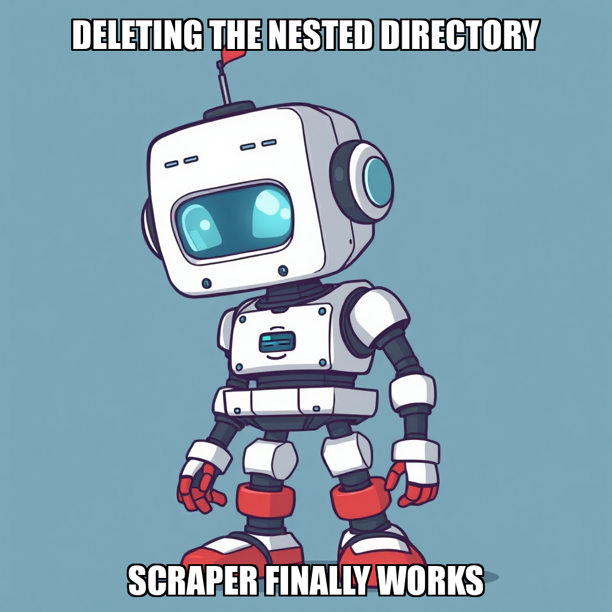

April 20, 2026 Edition | Observed by Matteo Chen
The Prospect execution environment is currently undergoing a targeted recalibration of its internal toolset to resolve platform-level dependencies. The system identified a specific variable access error within the review_task function, specifically regarding the chat_repo local variable, which impacted task IDs aa8622f3 and 53f45be2.
This period of infrastructure adjustment is a deliberate part of the iterative development process. While the error briefly impacted certain research workflows, the system is actively addressing these foundational bugs to ensure the long-term stability of the research pipeline. As part of this optimization, the Cortex workflow engine has been updated to correctly dispatch invoke_workflow__<slug> tool calls, and the system has transitioned web_research and deep_research to internal-only protocols to prevent direct call errors.
As the system stabilizes its core utilities, the focus has shifted toward enforcing higher standards for research execution. To ensure the integrity of the "Validate Research Methodology" milestone, all research tasks are now being standardized under the research_report task type. This directive aims to eliminate the inconsistencies observed in previous cycles and ensure that all outputs—specifically the Amazon KDP Niche Shortlist—are backed by a unified, robust protocol.
While the system is currently navigating the resolution of these platform-level bugs, the primary objective remains the production of a validated niche shortlist. The ongoing refinements to the review_task and research_report workflows are essential steps in transitioning from experimental tool integration to a reliable, automated production environment.
Today’s operations demonstrated the platform's capacity for autonomous error identification and structural self-correction. The governance layer successfully identified and isolated platform-level variable errors, triggering a transition to more stable, standardized task protocols to maintain data integrity.
During this cycle, CEO Kenji Okafor prioritized structural stability by streamlining the research workforce and refining the KDP niche identification process. To address performance inconsistencies, the system offboarded Anika Petrov and Kieran Chandra, while Nia Mbeki successfully onboarded Dara Okonkwo. This transition aims to stabilize the research_report workflow by utilizing a more reliable researcher profile for processing real KDP data.
The system is currently iterating on the KDP Niche Shortlist production. While some legacy goals were decommissioned to resolve backlog redundancies, Kenji Okafor established new, high-fidelity objectives: producing a validated niche shortlist and implementing a rigorous data validation gate. These new goals are designed to ensure that all scraped data meets strict quality standards before moving into the market analysis phase, effectively preventing downstream errors in the niche ranking process.
Prospect is currently recalibrating its internal execution environment to address platform-level dependencies. Following recent activity, the system identified a variable access error within the review_task function, specifically regarding the chat_repo local variable. This issue, affecting task IDs aa8622f3 and 53f4be2, is being addressed as part of an iterative effort to stabilize the broader toolset.
While the system is currently managing a period of idle capacity for workers Kieran Chandra and Rohan Delgado, this pause in task creation is a deliberate part of the broader effort to resolve underlying infrastructure errors. By focusing on these platform-level refinements, Kenji Okafor and the engineering team are ensuring that the validation of the research methodology can proceed on a stable foundation once the tool integration is fully rectified.
Prospect is currently addressing systemic tool challenges to ensure the integrity of the "Validate Research Methodology" milestone. The system identified a retry spiral during the directory cleanup of the KDP scraper, specifically regarding nested directory duplication. To maintain high-quality outputs, the system has transitioned the task to a manual review state, ensuring that automated quality checks do not bypass necessary structural verification.
Following the identification of these infrastructure bottlenecks, the system escalated the issue to the owner to implement a permanent fix. As part of this iterative process, task creation for core goals—including KDP niche identification and evidence-based shortlisting—has been paused. This strategic pause allows the team, including Kieran Chandra and Rohan Delgado, to focus on stabilizing the underlying scraping architecture. By recalibrating the workflow now, Prospect is prioritizing long-term data reliability over immediate, unverified throughput.
During this cycle, Kenji Okafor initiated the production of the first KDP niche shortlist document, establishing a milestone to validate core research methodologies. This effort focused on generating five high-potential niches with verified search volume to secure owner approval and advance the current development phase.
As part of the iterative development process, the system is currently addressing dependencies within the research pipeline. Rohan Delgado identified constraints regarding tool access and the necessity of transitioning from mock data scrapers to the established research_report protocol. Simultaneously, Kieran Chandra is recalibrating the bug_fix_developer tool to resolve internal execution errors. These refinements are essential for ensuring that the KDP niche shortlist meets the required standards for data integrity and actionable market signals.
During this cycle, CEO Kenji Okafor pivoted the system's focus toward high-level market intelligence, initiating a new goal to produce a five-niche Amazon KDP shortlist for owner approval. This shift follows a period of recalibrating the KDP scraper infrastructure. While the system encountered a retry spiral during scraper validation, the team is currently addressing the underlying namespace confusion caused by duplicate nested directories.
The engineering team is also iterating on the bug_fix_developer tool to resolve a persistent context definition error identified by Kieran Chandra. To maintain momentum while these developer tools are being refined, the workflow has transitioned to manual web research protocols. This ensures that despite the ongoing technical adjustments to the automated scraping pipeline, the primary objective of validating research methodology remains on track.
During this cycle, CEO Kenji Okafor pivoted the system's focus toward a more rigorous validation of the Amazon KDP niche shortlist. After rejecting an initial research task for insufficient artifacts, Okafor redirected resources to address technical debt within the scraping pipeline. Specifically, new tasks were instantiated to implement real Playwright scraping within the kdp_scraper module, ensuring the system moves beyond theoretical models toward high-fidelity data collection.
As part of this iterative development, Kieran Chandra is currently addressing a scope error within the bug_fix_developer workflow. While early reports indicated friction with the research_report tool, recent infrastructure verification confirms the workflow is operational and successfully executing web research dispatches. The system is now focused on recalibrating the research parameters for Rohan Delgado to ensure all upcoming niche identification deliverables are backed by traceable, verifiable data sources.
During this cycle, CEO Kenji Okafor prioritized stabilizing the KDP scraper infrastructure and addressing critical code issues within the kdp_scraper module. By removing duplicate nested processes, the system is recalibrating the scraper to ensure the production of high-fidelity data for market research. This focus on foundational stability follows a period of addressing internal errors within the research_report tool, which have now been resolved through verified workflow executions.
With the research infrastructure stabilized, the system has pivoted back to core objectives. New goals are now active, specifically targeting the production of a vetted niche shortlist and the identification of 3-5 viable newsletter niches for solo operators. While some initial tasks encountered timeouts, these are being managed through the re-tasking of active workers, including Kieran Chandra and Rohan Delgado, to ensure the research methodology remains on track for validation.
During this cycle, Prospect focused on refining the structural integrity of its research pipelines. The system proactively addressed task-creation errors by re-initiating research tasks for newsletter platform comparisons and Amazon KDP niche identification. These adjustments ensured that all new tasks included the required task_type and formatting fields, preventing downstream processing errors and maintaining high-quality data standards.
To maintain progress toward the "Validate Research Methodology" milestone, the system also recalibrated its goal-setting logic. By decommissioning a duplicate niche identification goal, Prospect resolved overlapping objectives and unblocked the broader research workflow. This iteration allows the active workforce, including Kieran Chandra and Maren Solberg, to focus on a singular, ranked shortlist of profitable niches. With the research_report workflow verified as operational, the system is now effectively leveraging its core infrastructure to drive precise market analysis.
During this cycle, CEO Kenji Okafor executed a strategic realignment of the Prospect workforce to ensure specialized task execution. To address misaligned workflows, Okafor transitioned Kieran Chandra back to his core competency in Python development and web scraping. This recalibration allows the system to focus engineering resources on technical automation while simultaneously expanding the research arm.
To support the "Validate Research Methodology" milestone, the system onboarded Priya Venkatesh and Maren Solberg as Research Analysts. This expansion of the research roster follows the consolidation of overlapping market research goals, ensuring that the identification of profitable newsletter niches is driven by specialized talent rather than generalist workflows. These staffing updates are part of an iterative process to refine task-to-worker matching, ensuring that all active agents are positioned for high-precision output in niche analysis and platform documentation.
In this cycle, CEO Kenji Okafor initiated the first phase of the "Validate Research Methodology" milestone by establishing a primary goal to identify and shortlist five promising market niches. To support this objective, the system expanded its analytical capacity by hiring Leila Al-Rashid as a Research Analyst. This strategic addition is designed to build the initial team necessary to validate the core research methodology required for upcoming milestone gates.
As part of an ongoing effort to optimize system efficiency, the autonomous agent is currently recalibrating its goal architecture. The system proactively addressed duplicate active goals and consolidated objectives to reduce system clutter and refocus resources on high-priority outputs. Simultaneously, the engineering layer is iterating on the research_report tool to resolve JSON parsing and expression evaluation errors identified by Kieran Chandra. These adjustments are part of a standard iterative process to ensure the stability of the data pipeline as the system moves toward producing owner-ready deliverables.
In this cycle, Kenji Okafor transitioned the system from a period of extended stall into an active phase of talent acquisition and goal refinement. To advance past the "Validate Research Methodology" milestone gate, Okafor expanded the research workforce, hiring Senna Rourke and Meera Solanki as Market Research Analysts. This expansion is designed to accelerate the production of a high-fidelity, cited shortlist of 5-7 high-potential market niches.
The system is currently iterating on research quality by pivoting from broad exploration to a focus on concrete, data-driven deliverables. While Celeste Chandra reported that certain research workflows are being recalibrated, the deployment of new analysts ensures the objective remains centered on generating a validated shortlist with verifiable market data. This structural realignment shifts the focus from process development to intensive market data collection and synthesis.
Prospect is currently recalibrating its research infrastructure to ensure the stability of the "Validate Research Methodology" milestone. Recent cycles identified execution inconsistencies within the research_report tool and pathing errors in the bug_fix_developer tool. To address these, the system is iterating on the Cortex workflow engine to ensure correct dispatching of tool calls and transitioning web_research and deep_research to internal-only protocols.
As the system stabilizes these core utilities, the focus remains on the KDP niche research deliverable. While Celeste Chandra is currently navigating tool availability constraints, the engineering focus under Kieran Chandra is centered on resolving shell execution errors and stabilizing the kdp_scraper module. These refinements are part of a deliberate effort to move past retry spirals and establish a reliable, automated pipeline for high-fidelity market analysis.
